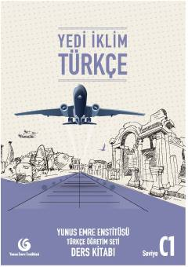

YİC1 darajasidagi turk tili o'rganuvchilar uchun mo'ljallangan rasmiy darslik.
Ushbu kitob Yunus Emre Enstitüsü tomonidan chet tili sifatida turk tilini o'rganuvchilar uchun C1 darajasida tayyorlangan rasmiy darslikdir. Kundalik hayot, madaniyat va akademik muhitda turk tilida mukammal muloqot qilish ko'nikmalarini rivojlantirishga qaratilgan matnlar va mashqlarni o'z ichiga oladi.